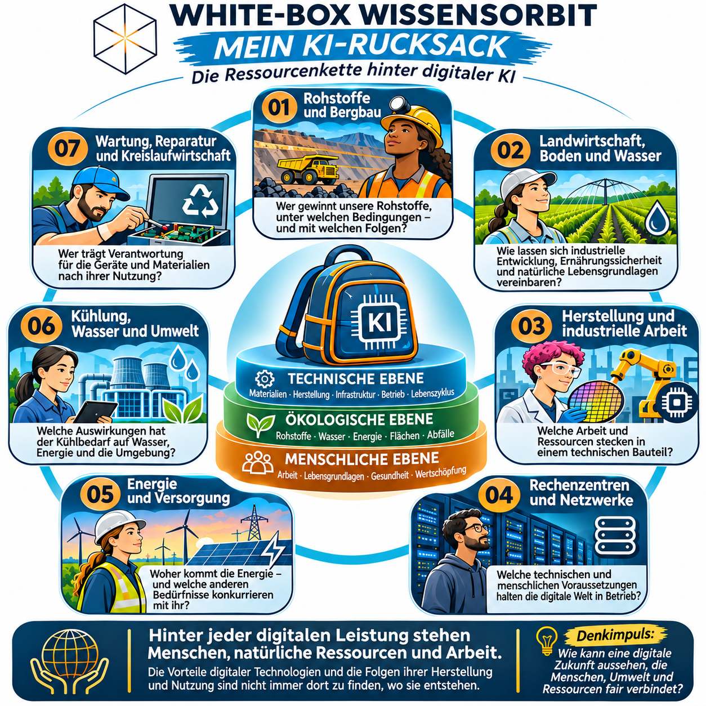

THE WHITE-BOX SYSTEM · SCHULANGEBOT
Ressourcencheck – Energie und Stromversorgung
Unterrichtsplakat: Was steckt eigentlich hinter einer KI-Antwort?


THE WHITE-BOX SYSTEM · SCHULANGEBOT
Unterrichtsplakat: Was steckt eigentlich hinter einer KI-Antwort?
